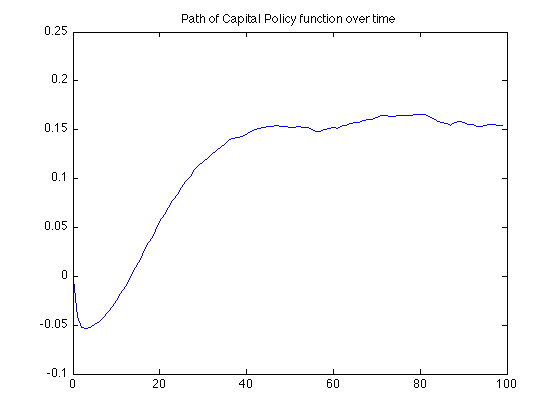
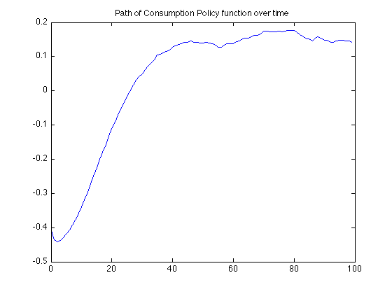

clear all
clc
alfa=0.27;
bet=0.97;
delta=1;
rho = 0.9;
sigma = 0.0072;
Zss = 1;
Kss = (Zss*alfa*bet/(1-bet*(1-delta)))^(1/(1-alfa));
Css = Zss*Kss^alfa - delta*Kss;
T=100;
k(1)=Kss/T;
lnZ(1)=log(Zss/T);
eps=randn(1,T);
c(1)=0.761*(k(1)-Kss) +0.45*(exp(lnZ(1))-Zss)+Kss;
for i = 1:(T-1)
lnZ(i+1)=rho*lnZ(i)+sigma*eps(i);
k(i+1)=0.27*(k(i)-Kss) +0.16*(exp(lnZ(i))-Zss)+Kss;
c(i+1)=0.761*(k(i+1)-Kss) +0.45*(exp(lnZ(i+1))-Zss)+Kss;
end
meanK=mean(k);
varK=var(k);
fprintf('Mean of Capital = %6.3f and Variance of Capital = %6.3f \n',meanK,varK)
meanC=mean(c);
varC=var(c);
fprintf('Mean of Consumption = %6.3f and Variance of Consumption = %6.3f \n',meanC,varC)
T=0:1:T-1;
figure
plot(T,k)
title('Path of Capital Policy function over time')
figure
plot(T,c)
title('Path of Consumption Policy function over time')
Mean of Capital = 0.113 and Variance of Capital = 0.005
Mean of Consumption = 0.032 and Variance of Consumption = 0.037
 